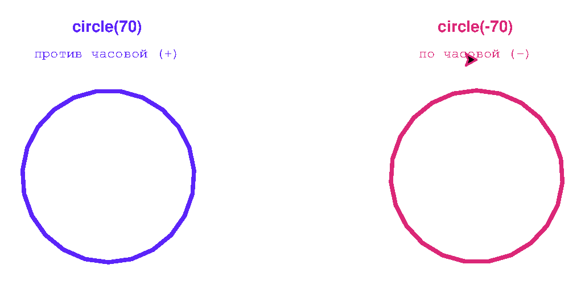

Глава 7 · Глубокое погружение в Turtle
Меняем направление рисования
Направление, знак радиуса и режим измерения углов — три связанные идеи, собранные вместе перед финальными мини-проектами.
Мы уже разобрали геометрию окружности подробно в начале главы. Здесь соберём три связанные идеи вместе — направление рисования, знак радиуса и режим измерения углов — и закрепим их перед финальными мини-проектами.
По часовой или против — определяет знак радиуса
cw_ccw.py
import turtle
screen = turtle.Screen()
screen.setup(width=560, height=340)
artist = turtle.Turtle()
artist.speed(0)
artist.pensize(3)
# circle(70) — центр на 70 px СЛЕВА от курса: старт ниже центра на 70,
# чтобы сам круг встал вокруг (-150, 0), не упираясь в край окна
artist.penup()
artist.goto(-150, -70)
artist.pendown()
artist.pencolor("#5B24F9")
artist.circle(70)
artist.penup()
artist.goto(-150, 115)
artist.write("circle(70)", align="center", font=("Arial", 13, "bold"))
artist.goto(-150, 95)
artist.write("против часовой (+)", align="center", font=("Arial", 11, "normal"))
# circle(-70) — центр на 70 px СПРАВА от курса: старт выше центра на 70,
# чтобы круг встал вокруг (150, 0) — симметрично первому
artist.goto(150, 70)
artist.pendown()
artist.pencolor("#DB2777")
artist.circle(-70)
artist.penup()
artist.goto(150, 115)
artist.write("circle(-70)", align="center", font=("Arial", 13, "bold"))
artist.goto(150, 95)
artist.write("по часовой (-)", align="center", font=("Arial", 11, "normal"))
screen.exitonclick()Результат выполнения

cw_ccw_kod.py
artist.circle(60) # против часовой стрелки — положительный радиус
artist.circle(-60) # по часовой стрелке — отрицательный радиусРежимы измерения углов
По умолчанию Turtle измеряет углы в градусах. Если по какой-то причине удобнее работать
в радианах (например, для совместимости с формулами из модуля math
из главы 5) — есть команды degrees() и
radians():
radiany.py
import math
artist.radians()
artist.left(math.pi / 2) # поворот на 90°, выраженный в радианах
artist.degrees() # возвращаемся к привычным градусамНе забудьте вернуться в градусы
Если вызвать
radians() и забыть degrees() в конце — все последующие повороты в программе будут интерпретироваться как радианы, а не градусы, что почти всегда приводит к неожиданным результатам.Практика: включает практику с направлением рисования
Тот же ноутбук, что и в разделе «Окружность в квадрате» — он охватывает и эту тему
Практика выполняется локально